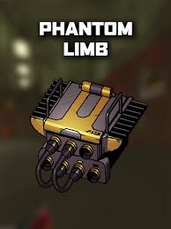
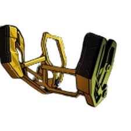

go to page 1
go to page 2
go to page 3
go to page 4
most of the upgrades
On this page I will be talking aboout the upgrades that your mech can get. I will be listing them from best to worst.
these first ones will be the best upgrade in my opinion.
- servos (they are very affective by just adding 50% power to a arm of your chooosing.)
- filters (they make all of the addons on the arm 50% stronger.)
- Magshot (you dealk 40% more damage to heavy enemies like the alpha dog and jack.)
- Reformers (it gives the cockpit one hit that is blocked and you dont take damage and you get this every 15 seconds but that timer resets each time oyu get hit.)
- phantom limb(whenever your arm is gone then your other arm gains 5x power so whatever arm you lose a lot you wanna put it on that one.)
now for the mediocre add ons.
- ctrl(lets you glide around much easier by giving you the ability to smooth glide once you let go of your hands on the ground instead of a immideite stop it is a glide and its easier to reposition.)
- BANG (If a enemy is shocked then you deal 200 extra stun damage which most enemys need 150 stun damge to get stnned so this is a great upgrade if you have somthing to shock your enemys.)
- targeter (This pairs perfectly with the add on BANG because this add on makes your attacks do 30% more physical damage while the enemy is stunned.)
- CLAP (This ability pairs well with the last two and Ill tell you why Whenever you put both of your hands above your head then smash the ground it emits a shockwave of electricity to stun your enemys so if you pair it withe the last two you shock the enemy then you just continuesly puch it until its dead putting it in a infinite stunlock.)
- overdrive (this allows you to deal 100% more physical damage but after each hit your arm overheats so now the enemys do 50% more damage to your arm.)
- aimbot (only useful if you have grappling hook or fingers because it makes your am 200% better when you throw somthing at a enemy.)
- leech (this gives you one of the most useful things in the game turbo while you are grabbing something in your arm the other arm gets turbo which makes that arm way stronger and it can pick up heavier things and throw things further.)
Weakest addons.
- shot(plus 5 physical damage but gets rid of all stun damage this is not worth the trade off because stun is on eof the most useful things in the game.)
- driver( plus 2 physical damage every 50% power.)
- packs(gives you 15 more stun damage fir every open add on slot you have which you only have 3 so early game it is alright but later when you get more upgrades it becomes preet much useless)
- zoomers(the more you puch the faster the arm gets but it isnt that noticable so your better off just selling this upgrade.)
- play(whenever you grab a enemy other enemys attack it but it does not work 100% of the time and if it does the enemys can jump at the enemy your holding and hit your arm so somtimes it backfires but this one is more just funny to mess around with.)
obviously these arent all the upgrades in the game but these are the ones that I know and what I think of them
go to page 3 for the some of the underdogs lore.

